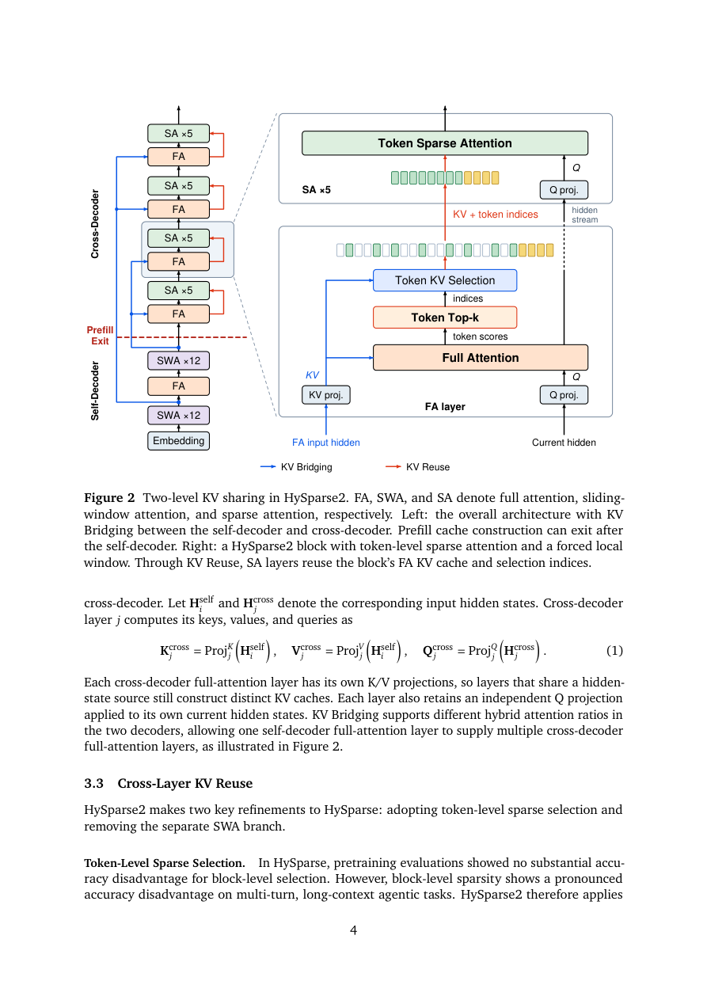

#1
★ 8/10
HySparse2: Hybrid Sparse Attention with Two-Level KV Sharing
HySparse2: Hybrid Sparse Attention with Two-Level KV Sharing

图 Figure · Page 4 of paper
🎯 （AI 中文深度分析暂不可用：Anthropic API 额度不足。英文栏为论文原文摘要，下方链接均可正常访问。）
Long-horizon and multi-turn agents typically generate short actions and process long observations from tools and environments
| 维度 | 中文 | English |
|---|---|---|
| ❓ 待解决 的问题 |
（AI 中文深度分析暂不可用：Anthropic API 额度不足。英文栏为论文原文摘要，下方链接均可正常访问。） | Long-horizon and multi-turn agents typically generate short actions and process long observations from tools and environments. This growing context demands efficient prefill, compact KV-cache storage, and accurate long-context retrieval. To meet these demands, we introduce HySparse2, a hybrid sparse attention architecture with two-level KV sharing. At the outer level, KV Bridging adopts a YOCO-style self-decoder and cross-decoder structure, but bridges only full-attention layers. The self-decoder uses hybrid sliding-window attention (SWA), while the cross-decoder uses hybrid sparse attention. The KV caches for full-attention layers in the cross-decoder are generated from the hidden states of full-attention layers in the self-decoder. At the inner level, HySparse2 retains HySparse's core KV Reuse design with two refinements. First, it replaces block-level sparsity with token-level sparsity for finer long-context retrieval. Second, it removes the separate SWA branch from sparse layers and instead forces a sliding window of recent tokens into the sparse selection. This two-level KV sharing allows all cross-decoder KV caches to be constructed from self-decoder hidden states. Prefill can therefore exit after the self-decoder, skipping all cross-decoder layers. On an 80B-A3B MoE model, HySparse2 outperforms HySparse and Hybrid SWA on long-context retrieval and multi-turn agentic tasks, while substantially reducing prefill computation and KV-cache storage. |
| 💡 解决 的亮点 |
（AI 中文深度分析暂不可用：Anthropic API 额度不足。英文栏为论文原文摘要，下方链接均可正常访问。） | See the paper’s original abstract in the "Problem / 背景" row above. |
| 🧪 实验 内容 |
（AI 中文深度分析暂不可用：Anthropic API 额度不足。英文栏为论文原文摘要，下方链接均可正常访问。） | See the paper’s original abstract in the "Problem / 背景" row above. |
| 📊 实验 结果 |
（AI 中文深度分析暂不可用：Anthropic API 额度不足。英文栏为论文原文摘要，下方链接均可正常访问。） | See the paper’s original abstract in the "Problem / 背景" row above. |
| 🏁 结论 | （AI 中文深度分析暂不可用：Anthropic API 额度不足。英文栏为论文原文摘要，下方链接均可正常访问。） | See the paper’s original abstract in the "Problem / 背景" row above. |
| 🔗 论文 链接 |
arXiv: 2609.26368v1 · 📥 PDF | |
⚙️ Method · 方法详解
（AI 中文深度分析暂不可用：Anthropic API 额度不足。英文栏为论文原文摘要，下方链接均可正常访问。）
See the paper’s original abstract in the "Problem / 背景" row above.
🌟 Why It Matters · 为什么重要
（AI 中文深度分析暂不可用：Anthropic API 额度不足。英文栏为论文原文摘要，下方链接均可正常访问。）
See the paper’s original abstract in the "Problem / 背景" row above.